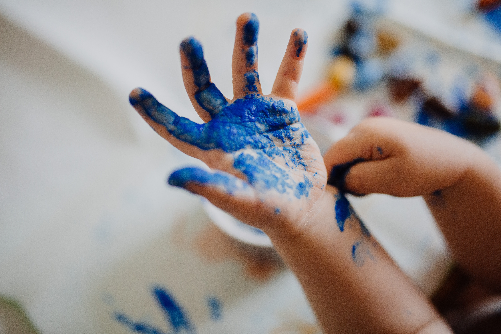

Bobotrele zrodziły się z chęci towarzyszenia i wspierania Waszych dzieci w procesie odkrywania świata muzyki. Każde zajęcia są starannie zaplanowane, a działania, zabawy i pomoce dydaktyczne mają swój określony cel. Za najwyższą wartość stawiam podążanie za dzieckiem, tak żeby wykorzystywać jego potencjał, wzmacniać nabyte umiejętności i wspierać jego integralny rozwój.
Słowa klucze to: podążanie za dzieckiem, empatia, współpraca z rodzicami, zabawa.